Research
My research combines differentiable physics, probabilistic programming, and program synthesis to reduce sample and model complexity and improve generalization for robot learning tasks.
|
|
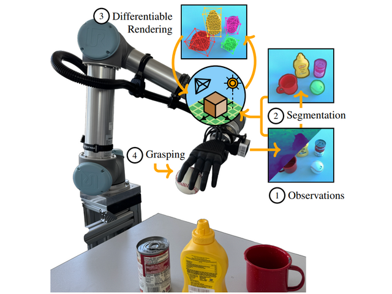
|
Differentiable Inverse Graphics for Zero-shot Scene
Reconstruction and Robot Grasping
Octavio Arriaga, Proneet Sharma, Jichen Guo, Marc Otto, Siddhant Kadwe, Rebecca Adam
arXiv, 2026
arXiv /
code /
project page
We built a differentiable ray tracer for meshes and a novel multi-stage constrained based optimization pipeline to reconstruct unseen scenes without training data using a single observation.
Furthermore, we validated the accuracy of our scene reconstructions by applying our method to a zero-shot robot grasping task.
|
|
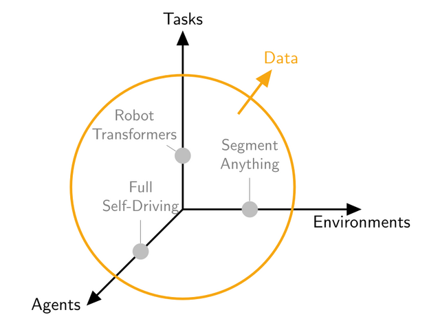
|
Bayesian Inverse Physics for Neuro-Symbolic Robot Learning
Octavio Arriaga, Rebecca Adam, Melvin Laux, Lisa Gutzeit, Marco Ragni, Jan Peters, Frank Kirchner
NeSy, 2025 (Oral Presentation)
paper /
arXiv /
open review /
poster
In this paper we argue for the following points in machine and robot learning:
▶ Learning algorithms shouldn’t ignore the most accurate predictive models of our world.
▶ Performance increases with more data, yet it remains insufficient for robot autonomy.
▶ We cannot trust the probabilities of a model that we do not understand.
|
|
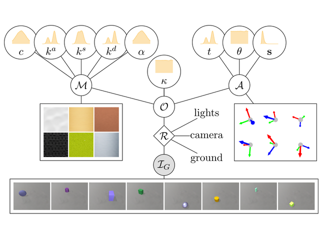
|
Bayesian Inverse Graphics for Few-shot Concept Learning
Octavio Arriaga, Jichen Guo, Rebecca Adam, Sebastian Houben, Frank Kirchner
NeSy, 2024
paper /
arXiv /
code /
poster
Current few-shot learning models have billions of parameters and use billions of training samples.
In this paper we present a few-shot classifier that:
▶ Generalizes with only few training samples.
▶ Uses only tenths of parameters.
The proposed model combines probabilistic reasoning, physics-based rendering, and a neural similarity metric to achieve strong few-shot generalization with limited data and parameters.
|
|
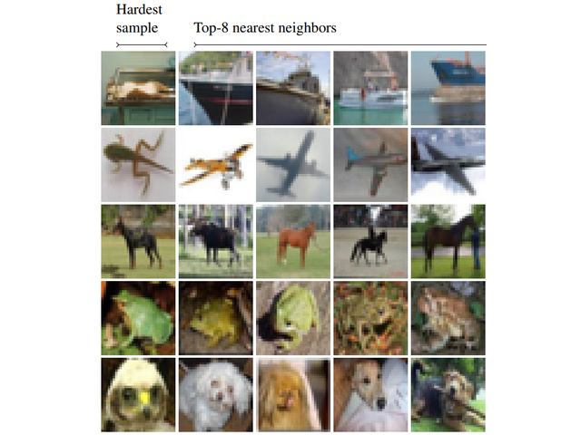
|
Difficulty Estimation with Action Scores for Computer Vision Tasks
Octavio Arriaga, Sebastian Palacio, Matias Valdenegro-Toro
CVPR Workshops, 2023 (Best Paper Award)
paper
We present an unsupervised method for calculating a difficulty sample score. Our method:
▶ Does not require any modification to the model.
▶ Does not require external supervision.
▶ It can be easily applied to a wide range of machine learning tasks.
We provide results for image classification, image segmentation, and object detection tasks.
|
|
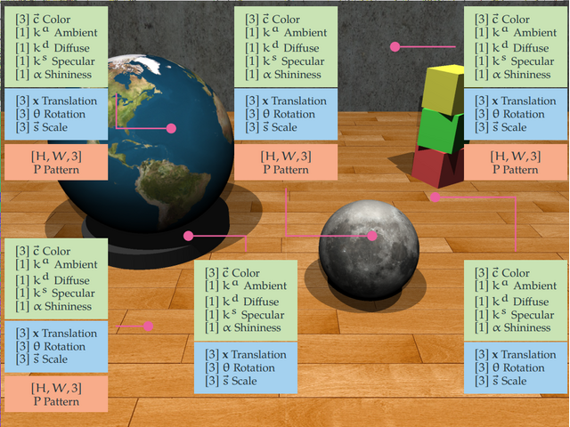
|
PhysWM: Physical World Models for Robot Learning
Marc Otto, Octavio Arriaga, Chandandeep Singh, Jichen Guo, Frank Kirchner
NeSy, 2023
paper
In this paper, we introduce PhysWM, a framework for robot learning that unifies differentiable physics, rendering, and Bayesian inference into an adaptable physical world model. The result is a more efficient and interpretable approach that allows robots to estimate uncertainty, improve their internal models through exploration.
|
|
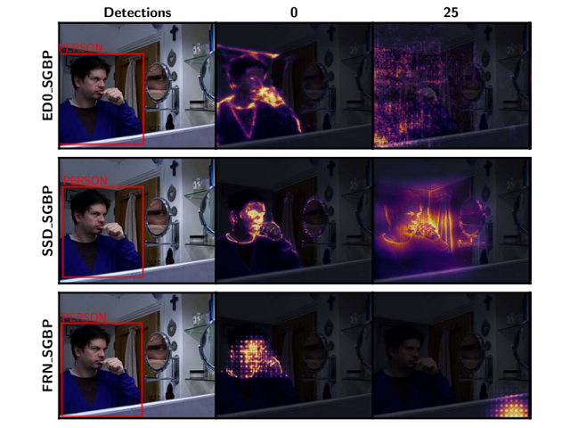
|
Sanity Checks for Saliency Methods Explaining Object Detectors
Deepan Chakravarthi Padmanabhan, Paul G. Ploger, Octavio Arriaga, Matias Valdenegro-Toro
xAI, 2023
PDF
We extend saliency-method sanity checks to object detectors and show that detector
architecture often matters more than the explanation method itself.
|
|
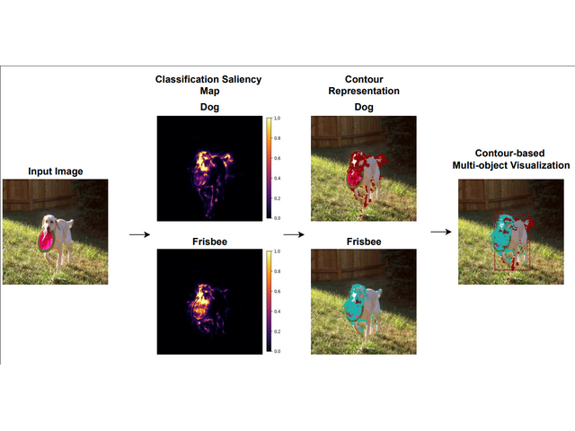
|
DExT: Detector Explanation Toolkit
Deepan Chakravarthi Padmanabhan, Paul G. Ploger, Octavio Arriaga, Matias Valdenegro-Toro
xAI, 2023
PDF
We present an open-source toolkit for explaining object detector predictions,
including both class decisions and bounding boxes, across multiple detector
architectures.
|
|
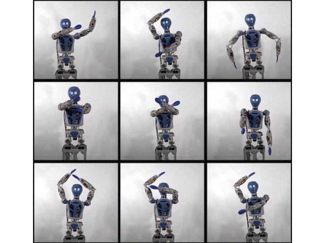
|
Robot Dance Generation with Music Based Trajectory Optimization
Melya Boukheddimi, Daniel Harnack, Shivesh Kumar, Rohit Kumar, Shubham Vyas, Octavio Arriaga, Frank Kirchner
IROS, 2022
We formulate robot dance generation as trajectory optimization aligned with musical
structure, enabling expert-guided, imitative, and automatically generated
choreographies.
|
|
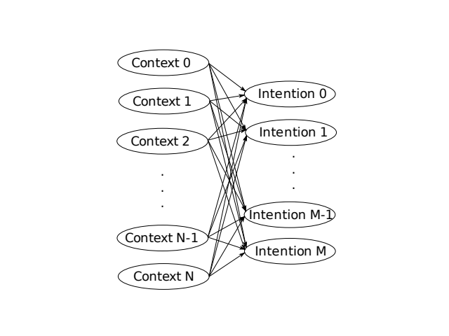
|
A Bayesian Approach to Context-based Recognition of Human Intention for Context-Adaptive Robot Assistance in Space Missions
Adrian Auer, Octavio Arriaga, Teena Hassan, Nina Hoyer, Elsa Andrea Kirchner
SpaceCHI 2.0, 2022
We combine context recognition modules with a two-layer Bayesian network to infer
astronaut intentions for context-adaptive robot assistance in space missions.
|
|
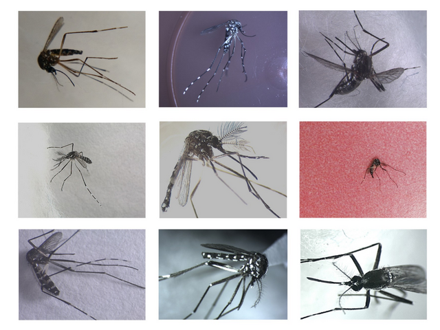
|
Optimization of Convolutional Neural Network Hyperparameters for Automatic Classification of Adult Mosquitoes
Daniel Motta, Alex Alisson Bandeira Santos, Bruna Aparecida Souza Machado, Otavio G. V. Ribeiro-Filho, Luis Octavio Arriaga Camargo, Matias A. Valdenegro-Toro, Frank Kirchner, Roberto Badaro
PLOS ONE, 2020
PDF
We optimize CNN architectures and training hyperparameters for automatic mosquito
classification, improving species recognition and Aedes detection from entomological
images.
|
|
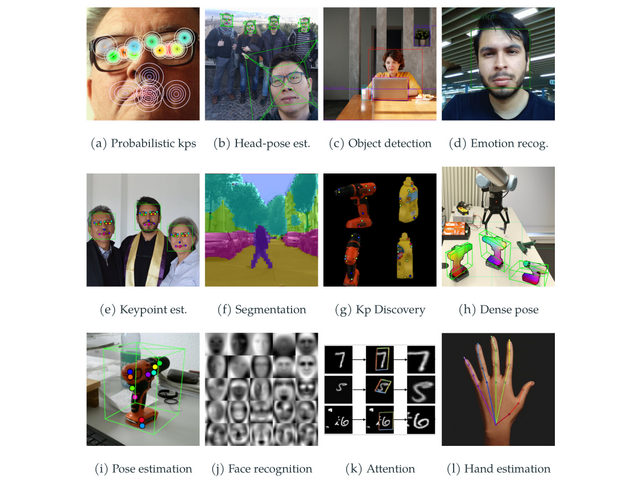
|
Perception for Autonomous Systems (PAZ)
Octavio Arriaga, Matias Valdenegro-Toro, Mohandass Muthuraja, Sushma Devaramani, Frank Kirchner
arXiv, 2020
PDF /
Code
We introduce PAZ, a hierarchical perception library for building reusable training
and inference pipelines across robotics and computer-vision tasks.
|
|
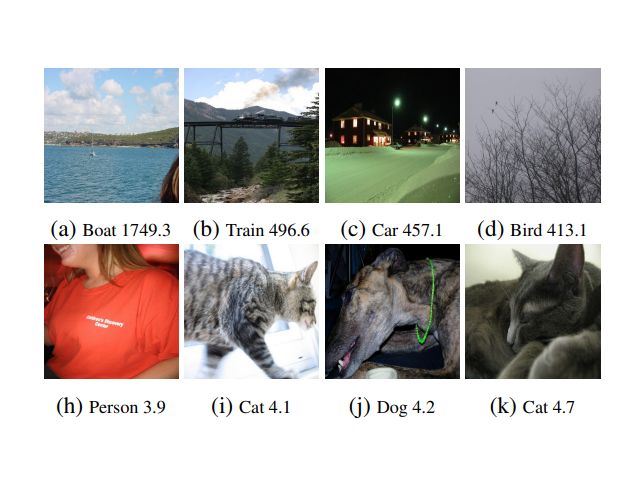
|
Unsupervised Difficulty Estimation with Action Scores
Octavio Arriaga, Matias Valdenegro-Toro
arXiv, 2020
PDF
We introduce the action score as a lightweight callback-based measure of sample
difficulty that helps analyze model behavior and dataset bias without extra
supervision.
|
|
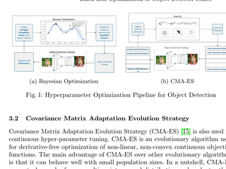
|
Black-Box Optimization of Object Detector Scales
Mohandass Muthuraja, Octavio Arriaga, Paul G. Ploger, Frank Kirchner, Matias Valdenegro-Toro
arXiv, 2020
PDF
We use black-box optimization to tune detector scales and input sizes, improving
object-detection performance without manual hyperparameter search.
|
|
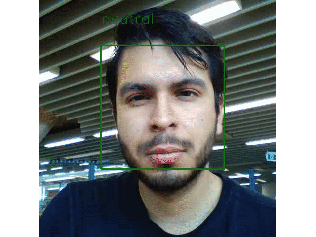
|
Real-time CNNs for Emotion and Gender Classification
Octavio Arriaga, Matias Valdenegro-Toro, Paul G. Ploger
ESANN, 2019
PDF /
Code
We proposed a general framework for designing real-time CNNs for robotic platforms.
By eliminating fully connected layers and leveraging depth-wise separable
convolutions, we reduced the model parameters by 80% while maintaining human-level
accuracy (96% for gender, 66% for emotion).
|
|
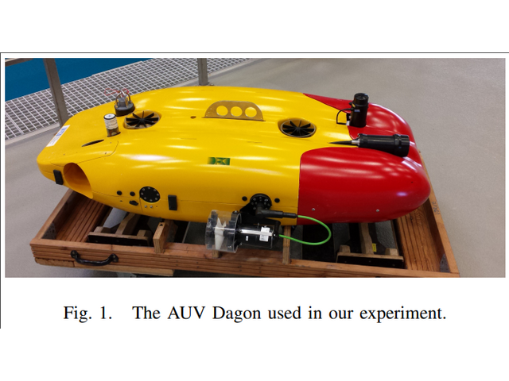
|
Learning of Multi-Context Models for Autonomous Underwater Vehicles
Bilal Wehbe, Octavio Arriaga, Mario Michael Krell, Frank Kirchner
AUV, 2018
PDF
We learn multiple context-dependent underwater vehicle dynamics with recurrent
models, improving robustness to changing operating conditions.
|
|
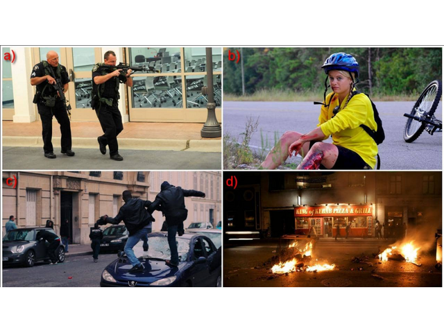
|
Image Captioning and Classification of Dangerous Situations
Octavio Arriaga, Paul G. Ploger, Matias Valdenegro-Toro
arXiv, 2017
PDF
We introduce a dataset and deep model for classifying and describing dangerous
scenes such as fires, injuries, and accidents from a single image.
|
|
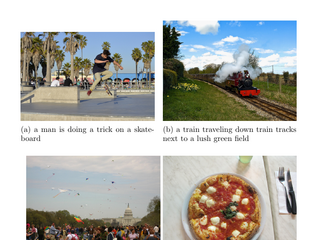
|
Scene Understanding through Deep Learning
Luis Octavio Arriaga Camargo
Technical Report, 2017
This technical report surveys scene understanding for robotics and introduces early
work on anomaly description and classification with deep learning.
|
|
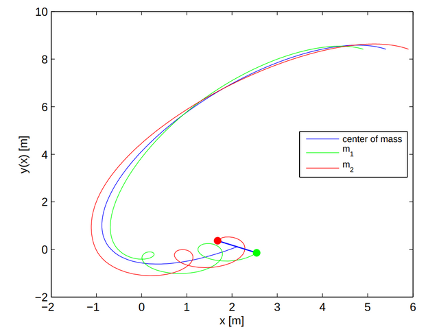
|
Synchronization of Dumbbell Satellites: Generalized Hamiltonian Systems Approach
Luis Octavio Arriaga Camargo, R. Martinez-Clark, C. Cruz-Hernandez, A. Arellano-Delgado, R. M. Lopez-Gutierrez
Nonlinear Dynamics and Systems Theory, 2015
PDF
We study attitude synchronization for dumbbell satellites using a generalized
Hamiltonian formulation and observer-based control design.
|
|